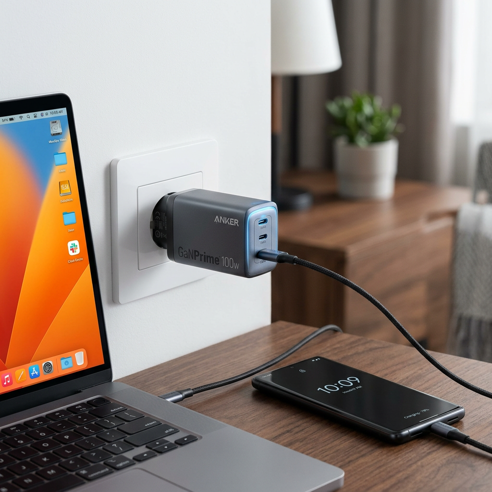
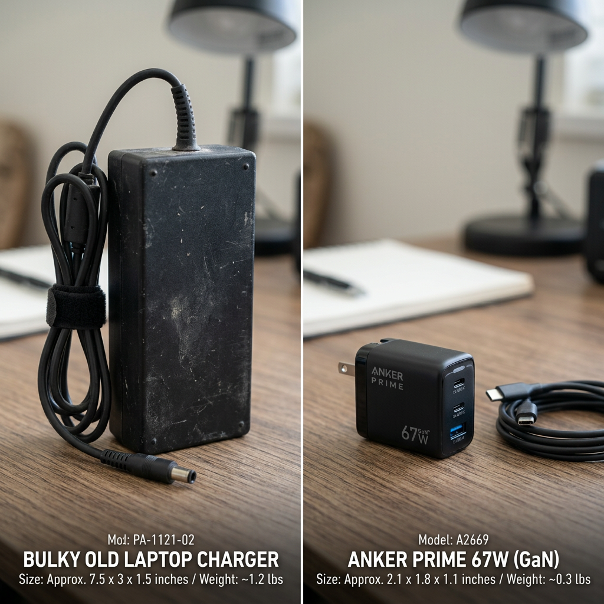
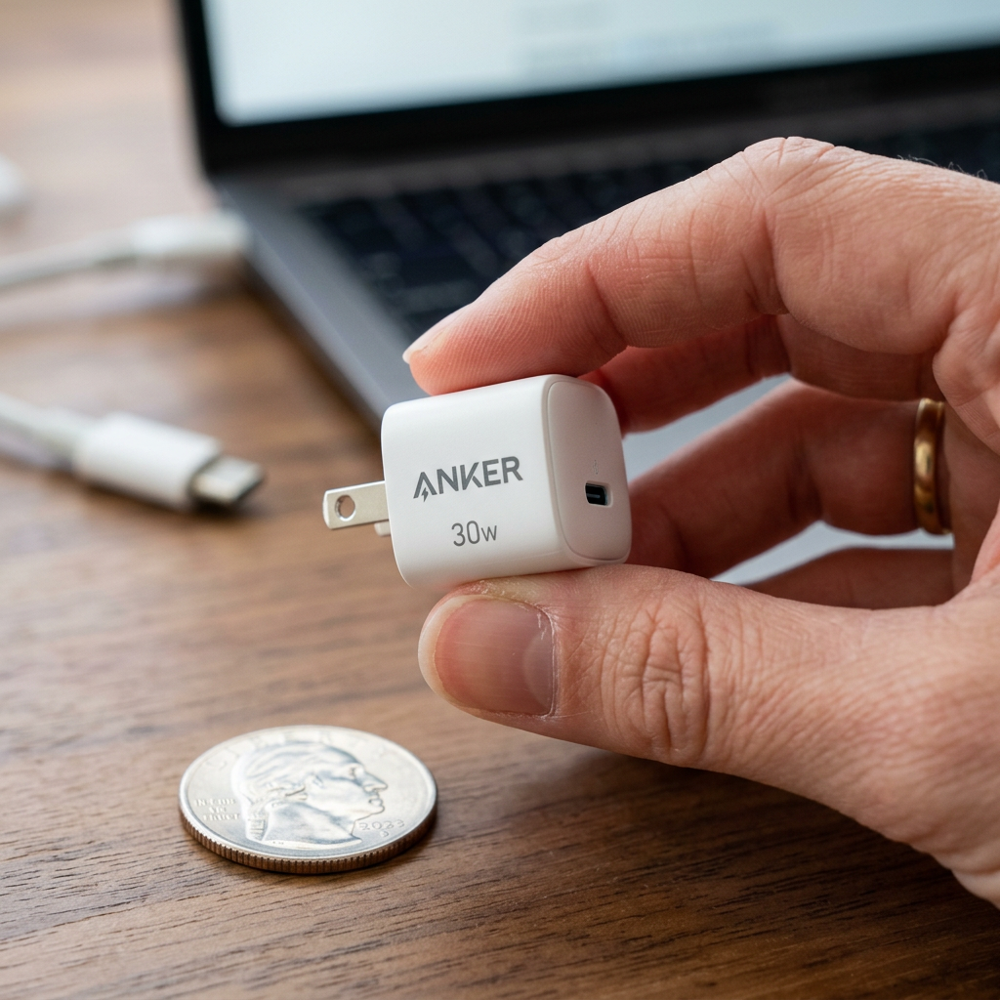

Why Your Devices Are Charging Slowly: The Ultimate Anker Charger Guide for Power Users
The Invisible Drain: Is Your Charger Holding Your Productivity Hostage?
We have all been there. You have a flight in twenty minutes, your phone is at 4%, and your bulky, outdated charger is barely moving the needle. In a world where our lives run on mobile silicon, a slow charger isn't just an inconvenience—it is a bottleneck to your entire day. Most people are still using the basic power bricks that came in the box years ago, unaware that they are leaving massive performance on the table and potentially degrading their battery health with inefficient heat management.
Anker has revolutionized the industry with Gallium Nitride (GaN) technology, packing massive wattage into frames half the size of traditional silicon chargers. But with so many options, which one actually fits your workflow? Whether you are a digital nomad needing to juice up a MacBook Pro or a minimalist looking for the fastest iPhone charge possible, choosing the right Anker charger is the single most effective upgrade you can make to your tech stack.

Quick Comparison: The Best Anker Chargers for Every Use Case
Before we dive into the technical specifications, use this table to find the perfect match for your specific device lineup.
| Product Name | Max Output | Best For | Verdict |
|---|---|---|---|
| Anker Prime 67W GaN Wall Charger | 67W | Laptops & Smartphones | The Perfect All-Rounder |
| Anker 737 Charger (GaNPrime 120W) | 120W | Workstations & Multi-Device | The Powerhouse Choice |
| Anker Nano 30W USB-C Charger | 30W | iPhone & Android Phones | The Minimalist Essential |
1. The Daily Driver: Anker Prime 67W GaN Wall Charger
If you could only own one charger for the rest of your life, the Anker Prime 67W is the strongest candidate. It strikes a surgical balance between portability and raw power. Equipped with three ports, it allows you to charge your laptop, phone, and earbuds simultaneously without the brick-sized footprint of traditional 60W+ chargers.
Why It Wins:
- Ultra-Compact Design: 51% smaller than an original 67W MacBook charger.
- Simultaneous Triple-Charging: Intelligently distributes power across two USB-C ports and one USB-A port.
- ActiveShield 2.0: Monitors temperature 3 million times per day to protect your expensive hardware.
This is the ideal solution for the professional who moves between coffee shops, offices, and home. It provides enough juice to fast-charge a MacBook Air or a high-end Windows ultrabook while ensuring your phone doesn't die during a long meeting.
Check Price on Official Store
2. The Heavy Hitter: Anker 737 Charger (GaNPrime 120W)
For those who refuse to compromise, the Anker 737 (GaNPrime 120W) is the gold standard. This is not just an Anker charger; it is a portable power station. Featuring the latest GaNPrime technology, it delivers a staggering 120W of total output, enough to fast-charge even the most power-hungry 16-inch laptops.
The Performance Edge:
- GaNPrime Technology: Higher efficiency and better heat dissipation than standard GaN.
- PowerIQ 4.0: Automatically detects the power needs of connected devices and adjusts in real-time for the fastest possible charge.
- Future-Proof: With 120W of overhead, this charger will handle the next several generations of high-performance mobile devices.
If your bag is filled with a tablet, a pro-grade laptop, and a flagship smartphone, the Anker 737 eliminates the need for any other wall plug. It is the ultimate insurance policy against low-battery anxiety.
Check Price on Official Store3. The Pocket Powerhouse: Anker Nano 30W USB-C Charger
Sometimes, less is more. The Anker Nano 30W is designed for the user who values mobility above all else. It is roughly the size of an old-school 5W charger but packs six times the power. It is specifically engineered to provide the maximum charging speed for the latest iPhones and Samsung Galaxy S-series phones.
Key Benefits:
- Invisible Footprint: Fits into the smallest pocket of your jeans or travel bag.
- Optimized for Mobile: Delivers 30W, which is the sweet spot for fast-charging modern smartphones and iPads.
- Reliability: Built with the same high-quality components as Anker’s larger units, ensuring long-term battery health.
The Nano 30W is the perfect companion for travel or as a dedicated bedside charger. It’s affordable, incredibly durable, and replaces the need for the slow, bulky chargers that often come bundled with devices.
Check Price on Official Store
Final Verdict: Which Anker Charger Should You Buy?
Choosing the right Anker charger comes down to your primary device. If you are a power user with a high-end laptop and multiple accessories, the Anker 737 (120W) is a non-negotiable investment in your productivity. It is the only charger that truly does it all.
For the average professional who needs a blend of portability and power for a laptop and phone, the Anker Prime 67W is the best value and most versatile option on the market today.
Finally, for the minimalist or the person who just needs the fastest phone charge possible, the Anker Nano 30W is an unbeatable, budget-friendly essential. Stop settling for slow charging—upgrade your power delivery and get back to what matters.